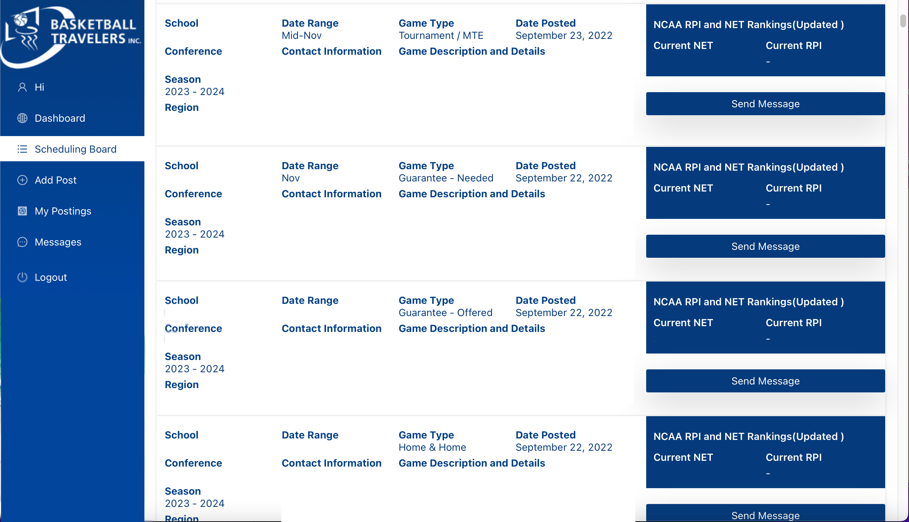

This article was originally published on TestudoTimes and is repurposed for the use of this assignment.
College programs spend money to schedule nonconference basketball games. In 2022, Maryland WBB spent $76,000. Photo courtesy of Maryland Athletics
Maryland women’s basketball hopes to be undefeated by the time mid-November rolls around. But it won’t be free. Here’s what it will cost the program to get there and how those games came to fruition.
2022, the women’s basketball program will spend $76,000 to play nonconference opponents this season, according to documents provided by the University of Maryland Public Records office. The figure excludes the multi-team events on Maryland’s schedule such as the ACC/Big Ten Challenge and Fort Myers Tip-Off.
Documents show Fordham University, Davidson College and George Mason University are the biggest recipients of guaranteed game payments from Maryland, each receiving $20,000 for games during its nonconference meetings this season. Purdue Fort-Wayne will receive $10,000 while the Terps’ two Division III exhibition opponents, Frostburg State and Millersville, will get $3,000 each.
The prices for these games can vary by the conference the school belongs to. A Southeast Conference (SEC) program such as South Carolina, who ranked No. 1 in the Preseason AP Poll and the Terps welcome to the Xfinity Center on Nov. 11, is able to offer more than a mid-major school simply because it has a larger budget. But the defending-champion Gamecocks, along with No. 6 UConn and No. 18 Baylor, are not receiving any money from Maryland because they are on similar competitive levels.
Mid-major schools will schedule other programs of the same caliber on their nonconference slate, however, those games will come at a much lower price. A smaller school like Fordham, of the Atlantic 10 Conference, will offer programs of the same caliber around $10,000 in guaranteed money, according to interim head coach Candice Green.
Over the last few seasons, the Terps gave $20,000 to six teams and won each of those games. According to Maryland assistant coach Kaitlynn Fratz, who is the main scheduling coordinator for the Terps, that is a “pretty standard” sticker price to offer. However, depending on the location and proximity to Maryland, more components of the deal could be included in the negotiation.
The most common example aside from money is hotel rooms. According to the gameday contract, Maryland covered the cost of 12 hotel rooms for its game against UNC Wilmington last season. It would have done so for games in 2020 against Coppin State and Mount St. Mary’s had they not been canceled due to positive COVID-19 cases within its program. Fratz said this stipulation of a contract is centered around how teams allocate their guaranteed money.
“Say $20,000 to a school may go to this department in this area … but if you give [$18,000] plus rooms, then you know exactly that the rooms are going to be paid for and that’s not coming out of your foundation or budget,” Fratz said.
For a school like Fordham, the $20,000 it is receiving from Maryland will go into its overall budget and cover expenses such as travel, food and hotels, among other things.
Green told Testudo Times the largest contract she has been offered was $32,000 by a Pac-12 school for the 2021-2022 season, but Fordham, who plays in the Bronx, New York, did not take the offer because the opponent was too far away.
"It’s pretty funny to see the different ways coaches try to sell themselves," Zane Hopen, Director of Communications at Basketball Travelers Inc.
Most NCAA coaches have social media accounts, but there’s a secretive method to the madness of getting games on the schedule, and there is no randomness about it.
Nearly 1,700 accounts are active on the site Basketball Travelers Inc., a company that facilitates a lot of the nonconference games and multi-team events in Division I men’s and women’s college basketball.
It also has a portal that likens itself to Facebook Marketplace and has a concept similar to a dating app. The bio shares what a team is about and what their interests are (money or hotel rooms). Coaches put their contact information on the portal and if another team is interested, they’ll set up a game. Maybe the app would be called Team Tinder?
The interface is shockingly simple and not elaborate, so much so that it really does liken itself to Facebook Marketplace. NCAA Division I head coaches can filter and toggle to get an opponent they’re looking for, and then have to put on their negotiation caps.
The scheduling board is where coaches and members of their staff can go to schedule games. The scheduling board helps coaches get nonconference games on the schedule and allows teams to contact each other.
The scheduling board on Basketball Travelers Inc. is where teams can go to schedule nonconference games and MTEs. Photo courtesy of Zane Hopen/Basketball Travelers Inc.
One mid-major coach told Testudo Times that smaller programs need to “be creative” in order for a program to fulfill the needs and budget requirements of the program. But most of what is seen, aside from guaranteed dollars for an athletic program, are the hotel rooms.
The site has roughly 1,700 accounts, including one for Maryland, according to Director of Communication at Basketball Travelers Zane Hopen. His job is to make sure the scheduling board runs appropriately and that coaches schedule their preseason games, nonconference games and multi-team events without a hitch. He also weeds out the accounts claiming to be NCAA coaches with a .edu email address.
“I get to read a lot of the posts and it’s pretty funny to see the different ways coaches try to sell themselves either short or long depending on what they want,” Hopen told Testudo Times.
Some of the bigger games on Maryland’s schedule — such as UConn and South Carolina — don’t have guaranteed money attached to them because the Terps are on a level playing field. Maryland’s brass had tried to get UConn on the schedule since 2018 and had signed an initial agreement in December of that year.
Following the Terps’ home game against UConn this season, the contract shows that Maryland will travel to UConn on a not yet determined date during the 2023-2024 season.
While this year’s nonconference slate is complete, Fratz said she only needs one more game to schedule for the following season and is looking for an opponent. Pieces of the schedule were filled out via home-and-home series deals that automatically put games on the schedule.
For the 2022-2023 season, there’s no secret it’s a gauntlet with multiple AP Top 25 teams on the docket. Senior forward Faith Masonius called it the toughest schedule she’s ever faced. It begins on Oct. 28 in an exhibition game against Frostburg State, to the tune of $3,000.